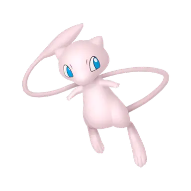

Mew (ミュウ Mew in Japanese) is a Mythical Psychic-type Pokémon introduced in Generation I. It is the ancestor of all Pokémon, possessing the genes of every existing Pokémon. Furthermore, it is the only Pokémon capable of learning all Technical Machines (TMs), Hidden Machines (HMs), Technical Records (TRs), and most Move Tutor moves.
